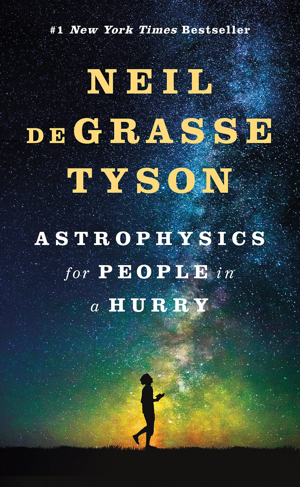
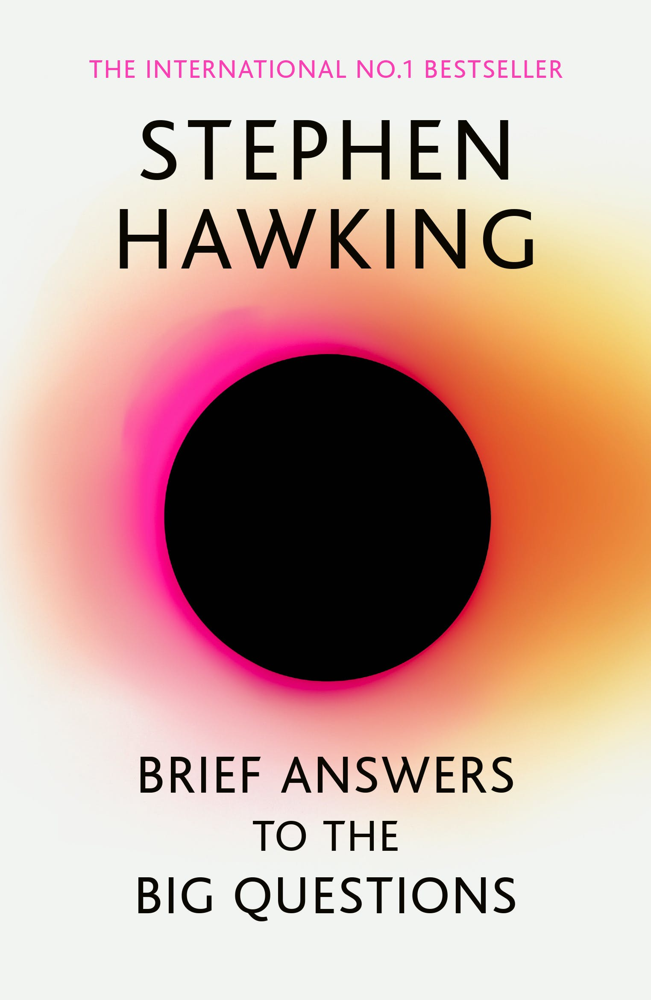
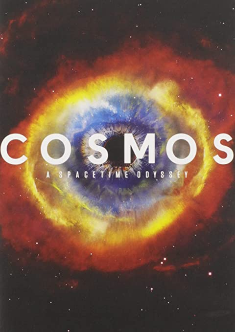
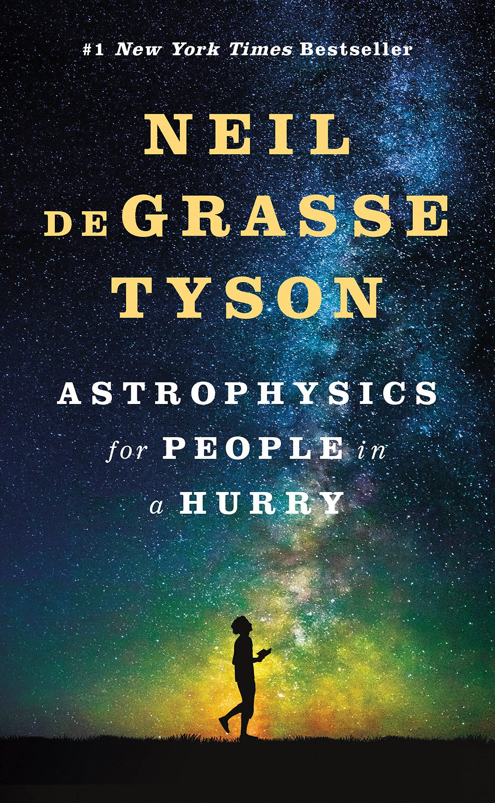
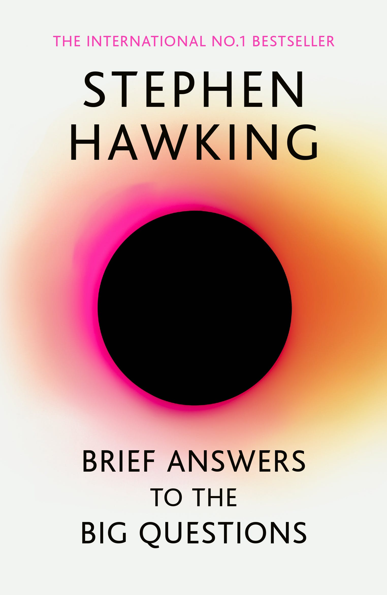
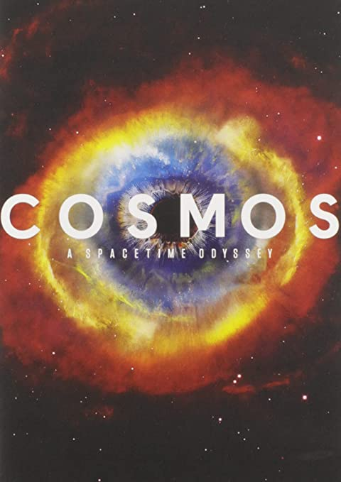

There is tons of literature available for those just getting started with their intellectual space explorations! These books, films, podcasts, and documentaries make the science easy to understand and enjoy. Here are some top recommendations for all knowledge levels - it doesn't matter if you're just starting out or are more seasoned, there is always something new to learn:
Books:
Neil DeGrasse Tyson's book Astrophysics for People in a Hurry is targeted towards those who want to skip past the jargon-filled science
and get right into the real answers. You will gain an understanding of all things space-related - black holes, dark matter, exoplanets, space colonisation, quantum
physics.. all without getting a headache! This 200 page book is a quick page-turner, and a great precedent for more in-depth space literature.


 




